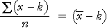

| mean squared error = |
|---|
Abstand von einem Zielwert
Die Kartoffelsäcke in einem Supermarkt sind mit dem Gewicht 3kg beschriftet. Wie nah liegt das tatsächliche Gewicht an diesem Ziel?
error = (x − k)
Wenn man jedoch n Kartoffelsäcke wiegt, wie kombiniert man die Fehler, um ein einzelnes Maß für Prognosesicherheit zu erhalten

| mean squared error = |
|---|
| root mean squared error = |  |
|---|
| Der Root Mean Squared Error ist ein „typischer“ Fehler. |
Gewicht von 3 kg wiegenden Kartoffelsäcken
Das Diagramm unten zeigt das Gewicht von sieben Kartoffelsäcken, beschriftet mit „3 kg“.
Ein Quadrat ist für jeden Datenwert eingezeichnet, dessen Seitenlänge gleich dem Fehler für diesen Kartoffelsack ist.
| Die Fläche eines jeden Quadrates ist der quadratische Fehler für den Wert. |
Der Root Mean Squared Error ist die Seitenlänge des Quadrats, dessen Fläche der Durchschnitt der Flächen der Quadrate ist. In Rot auf dem Diagramm zu sehen.
Ziehe die Kreuze, um zu sehen, wie die Werte den Root Mean Squared Error beeinflussen.
Du hast vielleicht bemerkt, dass ein Ausreißer einem Quadrat mit einer sehr großen Fläche entspricht und daher einen ungewöhnlich starken Effekt auf den Root Mean Squared Error hat.